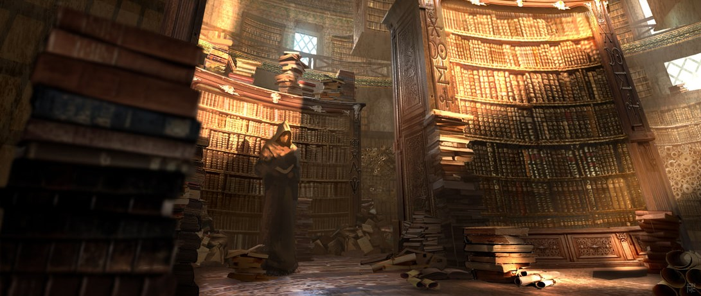

Karazhan Library
경제
[이것은 사업을 위한 최소한의 지식이다]-야마다 신야
[대한민국 부동산 흐름 읽는법]-신진수
[크러싱 잇! SNS로 부자가 된 사람들]-게리 바이너척
[원더키디의 세대, IT는 우리의 일상을 어떻게 바꾸는가?]-이영복
역사
[거의 모든 IT의 역사]-정지훈
[약자를 위한 현실주의]-이주희
철학
[내 안의 나를 깨우는 장자 외편]-장자
심리학
[나도 아직 나를 모른다]-허지원
처세술
[침묵이라는 무기]-코르넬리아 토프
과학
[창조하는 뇌]-데이비드 이글먼, 앤서니 브란트
경영
[적벽대전, 이길 수 밖에 없는 제갈량의 전략 기획서]-나단
소설
[82년생 김지영]-조남주
[잠]-베르나르 베르베르
[삼국지]-나관중
2019년 12월 독서
경제: [크러싱 잇! SNS로 부자가 된 사람들]-게리 바이너척
역사: [약자를 위한 현실주의]-이주희
철학: [내 안의 나를 깨우는 장자 외편]-장자
심리학/처세술: [나도 아직 나를 모른다]-허지원
과학:[창조하는 뇌]-데이비드 이글먼, 앤서니 브란트
경제: [원더키디의 세대, IT는 우리의 일상을 어떻게 바꾸는가?]-이영복
경영: [적벽대전, 이길 수 밖에 없는 제갈량의 전략 기획서]-나단
소설: [82년생 김지영]-조남주
소설: [잠]-베르나르 베르베르
소설: [삼국지]-나관중
2019년 11월 독서
경제: [이것은 사업을 위한 최소한의 지식이다]-야마다 신야
[대한민국 부동산 흐름 읽는법]-신진수
역사: [거의 모든 IT의 역사]-정지훈
처세술: [침묵이라는 무기]-코르넬리아 토프
- Show Yourself
- Karazhan Library
- Youtube Study
- Game Industry Trends